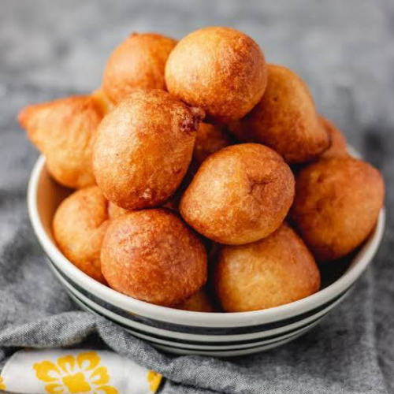

Puff Puff

Nigerian Puff Puff
Puff Puff, a soft, spongy, fluffy ball of heaven, is a popular Nigerian snack. It is deep fried similarly to a doughnut.
It is delicious and easy to make and requires just a few ingredients.
Ingredients
- 200g plain flour
- 70g sugar
- ¼ teaspoon salt
- 160ml lukewarm water
- 1 teaspoon active dry yeast
- Cooking oil for frying
- ¼ teaspoon nutmeg (optional)
Steps
- In a mixing bowl, mix flour, sugar, salt and nutmeg.
- In a small bowl mix the water with a teaspoon of sugar, add the yeast and stir well.
Leave it for 5-10minutes to activate.
- At the end of the 10 minutes the yeast mixture should have foamed. If this doesn't happen, discard it and try again.
- Pour the yeast mixture into the flour mixture and mix thoroughly.
- Cover with cling film or towel and leave to rise for 90-120 minutes or till it doubles in size.
- Pour oil into a deep pan. The oil should be atleast 3inches deep.
Let the oil heat up and scoop the batter into the oil with your hand. You can also use ice cream scoop.
- Test the oil by dropping a bit of batter in it. If it rises up after few seconds then the oil is ready.
- Flip the batter till it's golden brown. Place on kitchen towel to drain excess oil.
- Allow to cool and serve